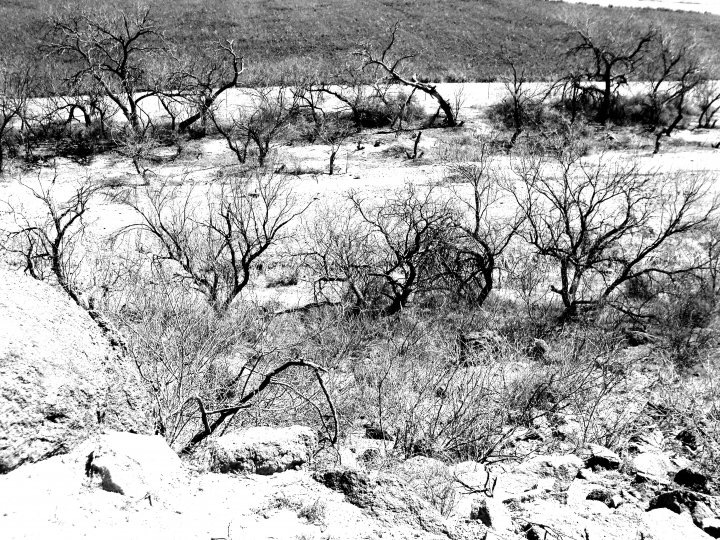

by Carmen Jimenez on 11/1/2016

With two-thirds of the earth's surface covered by water and the human body consisting of 75 percent of it, it is evidently clear that water is one of the prime elements responsible for life on earth. But pitifully, it seems that the only organism that does not understand the importance of water is humans, especially in industrialized countries. When most United States citizens think about water shortages, if they think about i at all, they think about a local problem. People in Arizona live in a desert state, even some would say a state of denial because despite the obvious arid conditions, it seems that people do not care how much water they are wasting. But what causes Arizonans to waste water while living in a desert? There are many answers: residential, industry, and recreation, but two stand out in particularly. Golf courses use two-thirds of water, or about 4 percent to 5 percent of total supply, and it is only for recreation.
Agriculture, on the other hand, uses water to generate products that add up to a $2.4 billion-a-year-industry and benefits everyone. It is evident that agriculture is more efficient than other markets in Arizona, not only because it is trying to resourcefully use its water, but also because it serves as an important buffer for that state's water supply holding onto a reserve that could be used in dry times.
For more information you can visit: